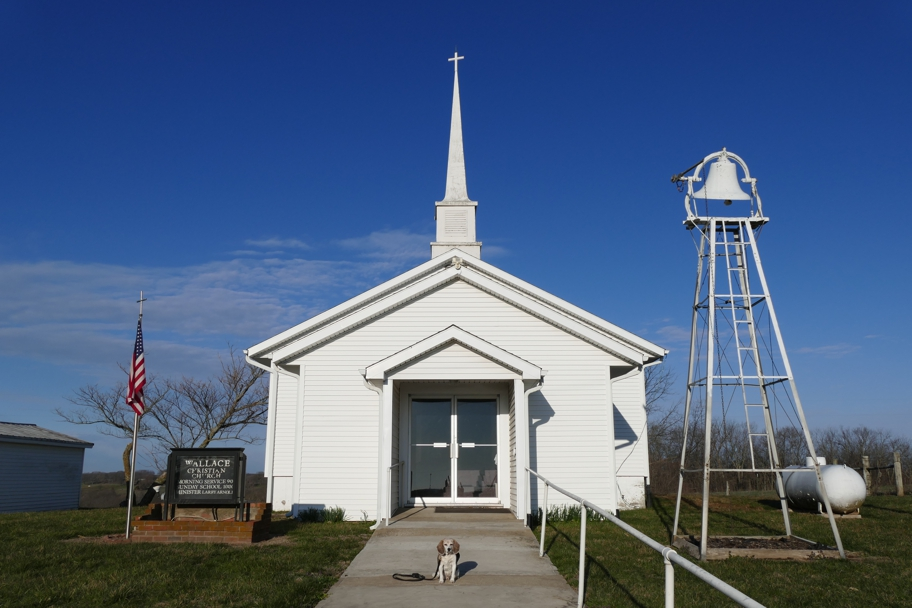

Though it was once a launchpad for pioneers headed west, St. Joe has few amenities for travelers today. We backtracked to the Kansas City Airport Motel 6, stashed the dogs, and enjoyed a barbecue dinner at Joe's in KC, Kansas and a set at the Green Lady Lounge in KC, Missouri. The next day we breakfasted on tasty sausage rolls from a bakery near the motel and headed back north past St. Joe, stopping at this country church for a Wallace photo.
Missouri Wallace Wallace Beagle